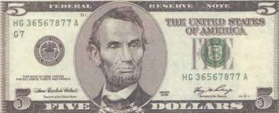
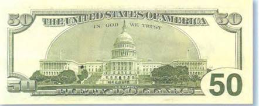
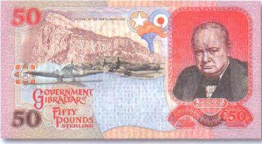

Тайны бумажных денег : Поезд-призрак

Цепочка мистических событий тянется за самой популярной исторической личностью Соединенных Штатов Америки — Авраамом Линкольном (1809–1865). Его выразительный портрет помещен на лицевой стороне пятидолларовой купюры (рис. 91).

В то же время на ее оборотной стороне показан монумент в честь этого президента США — 16-го по счету. Линкольн оставил заметный след в американской истории, и заслуги этого человека бесспорны. Ведь именно он отменил в Америке рабство. А многое из того, что он когда-то сказал, уже давно стало крылатыми фразами. Как, например, знаменитое «Коней на переправе не меняют»! Однако личность Авраама Линкольна приобрела и печальную известность. Дело в том, что он — первый американский президент, на которого было совершено покушение (и не раз!). 14 апреля 1865 г. он был смертельно ранен в ложе театра Форда. От пули убийцы в свое время погиб и дед Линкольна. Кстати, звали его тоже Авраамом. Казалось бы, ничего странного в этом нет. В прошлые века покушения совершались с завидной частотой. Но вот действительно невероятным совпадением можно считать тот факт, что жен обоих Линкольнов звали Мэри, а сыновей — Томас.

Авраама Линкольна хоронили с большими почестями. Он стал первым американским президентом, чье тело было выставлено в ротонде Капитолия. Рисунок Капитолия имеется на оборотной стороне американской банкноты номиналом в 50 долларов (рис. 92).
Говорят, что с тех самых пор призрак этого известного государственного мужа периодически появляется в местах, так или иначе связанных с его непростой судьбой. Линкольна, как позже и призрака его убийцы, не раз видели в президентской ложе театра им. Форда. Но чаще всего привидение убиенного можно встретить в стенах Белого дома. И свидетелей таких встреч предостаточно. Есть среди них и именитые. Такие, как королева Великобритании. Она столкнулась с призраком Авраама Линкольна нос к носу, когда гостила там.

Как, впрочем, и ее не менее известный соотечественник Уинстон Черчилль, чей портрет украсил банкноту Гибралтара в 50 фунтов 1995 г. (рис. 93).
Со слов самого Черчилля, как-то ночью его разбудил негромкий стук в дверь. Английский премьер-министр открыл ее и увидел высокого бородатого мужчину. Старомодно одетый незнакомец ходил взад-вперед по комнате и при этом не обращал на Черчилля никакого внимания. А потом он попросту исчез. И только утром до англичанина дошло, с фантомом какого человека он повстречался.
Из Вашингтона гроб с телом Линкольна поездом отправили в его родной город Спрингфилд (штат Иллинойс), где он и был погребен на кладбище Оук-Ридж. С тех самых пор каждый год в апреле, в день убийства президента, призрак траурного поезда будто бы движется по рельсам из Вашингтона в Иллинойс. Те, кто уже раз видел поезд-фантом, сообщают, что, прежде чем он появляется, вокруг становится на удивление тихо. Поезд убран черными флагами, а сопровождают в последний путь 16-го президента Соединенных Штатов Америки призрачные силуэты людей, одетых по моде того времени.